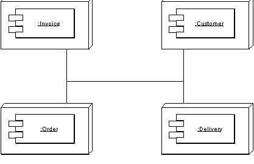
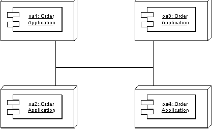

| Home | Articles | Talks | Links | Contact Me | ISA | ThoughtWorks |
Objects have around for a while, and sometimes it seems that ever since they were created folks wanted to distribute them. However distribution of objects, or indeed of anything else, has a lot more pitfalls than many people realize - especially when under the influence of vendors' cozy brochures. This chapter is about some of these hard lessons - lessons I've seen many of my clients learn the hard way.
This is a recurring presentation that I used to see two or three times a year when doing design reviews. Proudly the system architect of a new OO system lays out his plan for a new distributed object system. Let's pretend it's a some kind of ordering system with customers, orders, products, and deliveries. They show me a design that looks rather like Figure 1>. The design has separate remote objects for customers, orders, products, and deliveries. Each one is a separate component that can be placed on a separate processing node.
Figure 1: Distributing an application by putting different components on different nodes.
So I ask: "why do you do this?"
"Performance, of course" the architect replies, looking at me a little oddly. "We can run each component on a separate box. If one component gets too busy we add extra boxes for that component - enabling us to load balance our application." The look is now curious as if he wonders if I really know anything about real distributed object stuff at all.
Meanwhile I'm faced with an interesting dilemma. Do I just say out and out that this design sucks like an inverted hurricane and get showed the door immediately? Or do I try to slowly shine the light onto my client. The latter is more remunerative but is much tougher, since the client is usually very pleased with his architecture and it takes a lot to give up on a fond dream.
So assuming you haven't shown this book the door I guess you'll want to know why this distributed architecture sucks. After all many vendors of tools will tell you that the whole point of distributed objects is that you can take a bunch of objects and position them how you like on processing nodes: and their powerful middleware provides transparency. Transparency that allows objects to call each other within a process or between a process without them knowing if the callee is in the same process, another process, or another machine.
Such transparency is valuable, but while many things can be made transparent in distributed objects - performance isn't usually one of them. Although our prototypical architect was distributing things the way he was for performance reasons - in fact his design will usually cripple performance, or make the system much harder to build and deploy, or usually both.
The primary reason why the distribution by class model doesn't work, is because of a fundamental fact of computers. A procedure call within a process is very, very fast. A procedure call between two separate processes is orders of magnitude slower. Make that process a process running on another machine and you can add another order of magnitude or two - depending on the network topography involved.
As a result of this you need a different kind of interface for an object that's intended to be used remotely from one that intended to be used locally within the same process.
A local interface is best as a fine grained interface. So if I have an address class - a good interface would have separate methods for getting the city, getting the state, setting the city, setting the state etc. A fine grained interface is good because it follows the general OO principle of lots of little pieces that can be combined and overridden in various ways to extend the design into the future.
A fine grained interface does not work well, however, when you have a remote interface. When method calls are slow, you want to obtain or update the city, state, and zip in one call rather than three calls. The resulting interface is coarse-grained, designed not for flexibility and extendibility but for minimizing the calls. Here you'll see an interface along the lines of get address details and update address details. This coarse grained interface is much more awkward to program to, but for performance you need to have it.
Of course what middleware vendors will tell you is that there is no overhead to using the their middleware for remote and local calls. If it's a local call it's done with the speed of a local call. If it's a remote call it's done more slowly. So you only pay the price of a remote call when you need a remote call. This much is, to some extent, true. But it doesn't avoid the essential point that any object that may be used remotely should have a coarse-grained interface, while every object that isn't used remotely should have a fine-grained interface. Whenever two objects communicate you have to choose which to use. If the object could ever be in separate processes you have to use the coarse-grained interface and pay the cost of the harder programming model. Obviously it only makes sense to pay that cost when you need to - so you need to minimize the amount of inter-process collaborations.
As a result you can't just take a group of classes that you design in the world of a single process, throw CORBA or some such at them, and come up with a distributed model. Distribution design is more than that. If you base your distribution strategy on a classes - you'll end up with a system that does a lot of remote calls and thus needs awkward coarse-grained interfaces. In the end, even with coarse-grained interfaces on every remotable class you'll still end up with too many remote calls, and system that's awkward to modify as a bonus.
Hence we get to Fowler's First Rule of Distributed Object Design: don't distribute your objects!
So how do you effectively use multiple processors? In most cases the way to go is to use clustering. Put all the classes into a single process and then run multiple copies of that process on the various nodes. That way each process uses local calls to get the job done and thus does things faster. You can also use fine-grained interfaces for all the classes within the process and thus get better maintainability with a simpler programming model.
Figure 2: Clustering involves putting several copies of the same application on the different nodes.
So you want to minimize distribution boundaries and utilize your nodes through clustering as much as possible. The rub is that there are limits to that approach. There are places where you need to separate the processes. If you're sensible you'll fight like a cornered rat to eliminate as many of them as you can - but you won't eliminate them all.
The overriding theme is, in Colleen Roe's memorable phrase, to be parsimonious with object distribution. Sell your favorite grandma first if you possibly can.
So as you design your system, you need to limit your distribution boundaries as much as possible, but where you have them you need to take them into account. Every remote call travels over the cyber equivalent of a horse and carriage. All sorts of places in the system will change shape to minimize those remote calls. That's pretty much the expected price.
However you can still design within a single process using fine-grained objects. The key is to use fine-grained objects internally and place coarse grained objects at the distribution boundaries whose sole role is to provide a remote interface to these fine-grained objects. These coarse grained objects don't really do anything, so they act as a facade for the fine-grained objects, a facade that's only there for distribution purposes, the usual term for them is Remote Facade.
Using a Remote Facade helps minimize the difficulties that the coarse-grained interface introduces. This way only the objects that really need a remote service need the coarse grained method, and it is obvious to the developers that they are paying that cost. Transparency has its virtues, but you don't want to be transparent about a potential remote call.
However by keeping the coarse grained interfaces as mere facades, you allow people to use the fine-grained objects whenever they know they are running in the same process. This makes the whole distribution policy much more explicit.
Hand in hand with Remote Facade is Data Transfer Object. Not just do you need coarse-grained methods, you also need to transfer coarse grained objects. When you ask for an address, you need to send that information in one block. You can't usually send the domain object itself, because the domain object is tied in a web of fine-grained local inter-object references. So you take all the data that the client needs and bundle it up into a particular object for the transfer, hence the term Data Transfer Object (Many people in the enterprise Java community use the term value object for this, but this causes a name clash with other meanings of the term Value Object. The Data Transfer Object appears on both sides of the wire, so it's important that it doesn't reference anything that isn't shared over the wire. This boils down to the fact that a Data Transfer Object usually only references other Data Transfer Objects and fundamental objects such as strings.
Another route to distribution is to have a broker that migrates objects between processes. The idea here is to use a Lazy Load scheme where instead of lazy reading from a database, you move objects across the wire. The hard part of this is ensuring you don't end up with lots of remote calls. I've not seen anyone try to do this in an application, but some OR mapping tools (eg TOPLink) have this facility, and I've heard some good reports about it.
 |  |
{kind=link}